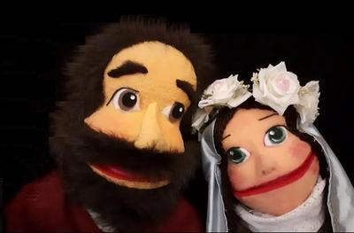

Pues mucho, aunque parezca extraño. Cuando escuchamos la palabra «marioneta», solemos pensar en pequeños muñecos manipulados por cuerdas, utilizados en representaciones teatrales o infantiles para contar historias y entretener. Son elaborados de diversos materiales, como madera, trapo, metal o plástico, y parecen cobrar vida en las hábiles manos de los titiriteros.


Sin embargo, la palabra «marioneta» tiene un origen interesante que casi todos desconocen: un origen religioso. Proviene del francés marionnette, documentado desde el siglo XVI como un derivado de Marion, diminutivo de Marie (María). Es decir, originalmente significaba algo así como «pequeña María» o Marita.
El término llegó al castellano hace relativamente poco tiempo. La primera aparición documentada en una publicación académica en español, fue en el «Diccionario de la lengua española» de José Alemany y Bolufer, de 1917, con la acepción de «títere, muñeco que se mueve por medio de cuerdas». Sin embargo, la palabra original, «marionnette», comenzó siendo usada para referirse al titiritero que fingía voces femeninas agudas o chillonas, hablando en falsete.
¿Pero qué tiene que ver todo esto con la religión? Pues, resulta que al principio el titiritero era generalmente un clérigo, quien realizaba representaciones religiosas en las que aparecía la Virgen María, y el término «marionnette» era precisamente en alusión a ella. En la Europa medieval, una época en que la mayoría de la población no sabía leer ni escribir, las iglesias utilizaban representaciones visuales para transmitir historias bíblicas. Y entre estos recursos estaban pequeñas dramatizaciones con figuras móviles o muñecos, con los que se escenificaban episodios del Evangelio.
Y como es fácil imaginar, uno de los personajes más frecuentes en esas presentaciones, era la Virgen María. Así, aquellas pequeñas figuras que personificaban a «la madre de Dios», comenzaron a ser conocidas como «marionettes», es decir, «pequeñas Marías». Pero con el paso del tiempo, la palabra dejó de referirse exclusivamente a la figura de la Virgen, para aplicarse a cualquier muñeco usado en espectáculos teatrales. Nació así el moderno término «marioneta». Poco a poco el origen religioso de la palabra se fue olvidando, quedando el simple significado teatral.
Como dato curioso, las palabras «títere» y «titiritero» tienen un origen diferente. Muchos lingüistas creen que provienen de una onomatopeya que imitaba el sonido «ti-ti», producido por un pequeño silbato usado por los titiriteros para simular la voz de los muñecos.
A partir del Renacimiento, y especialmente desde los siglos XVI y XVII, el teatro de títeres se volvió un espectáculo popular, apareciendo personajes cómicos y seculares, y la palabra marionnette terminó aplicándose a cualquier muñeco manipulable. El origen religioso se fue olvidando, y la palabra quedó con su significado actual. Posteriormente, la palabra pasó al español como un galicismo (préstamo del francés).
Pero la parte irónica es que ahora llamamos «marioneta» también, en sentido figurado, a una persona que es manipulada por otros. La metáfora es clara: se trata de un personaje sin autonomía, manejado por manos invisibles. Y resulta entonces curioso que una palabra derivada del nombre de María, haya terminado designando precisamente a un muñeco o una persona que son manipulados.
Lo cierto es que la palabra «marioneta» nos ofrece una metáfora para reflexionar también sobre la manipulación y el control que ocurre en el ámbito religioso: así como los titiriteros controlan los movimientos de las marionetas, los líderes religiosos ejercen un control importante sobre los pensamientos y acciones de sus seguidores.
En fin, la marioneta con su origen religioso, ofrece una lección valiosa: la importancia de la autonomía y la libertad de pensamiento, frente a la manipulación y el control externo. Esto debería inspirarnos a ser protagonistas de nuestras propias vidas, y no meras figuras controladas por hilos o manos invisibles.
[Godless Freeman]
Referencias:
https://www.elcastellano.org/palabra/marioneta
Comentarios
Comments powered by Disqus